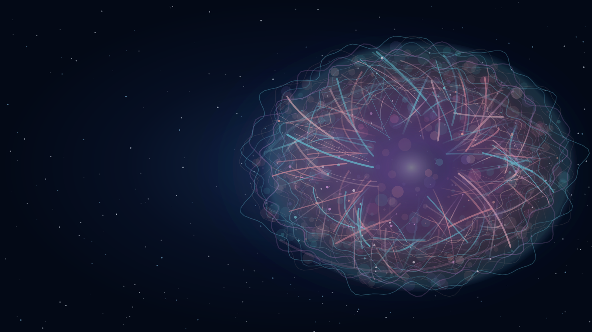

ROZDZIAŁ 34 · ŚLADY GWIAZD
Po gwieździe zostaje światło.
Eksplozja trwa krótką chwilę. Jej ślad wędruje przez przestrzeń przez tysiące lat. A z tego, co pozostało po gwieździe, Wszechświat buduje kolejne rozdziały własnej historii.
NA NIEBIE POJAWIA SIĘ NOWA GWIAZDA
Pewnego dnia świeci tak jasno, jakby ktoś zapalił drugi świt.
Przez większość życia masywna gwiazda utrzymuje niezwykłą równowagę. Grawitacja próbuje ściągnąć jej materię do środka. Ciśnienie związane z gorącym wnętrzem przeciwstawia się temu naciskowi. W jądrze kolejne reakcje syntezy jądrowej zmieniają skład gwiazdy i pozwalają jej świecić.
Aż przychodzi moment, gdy żelazne jądro bardzo masywnej gwiazdy nie może już utrzymywać równowagi. Rozpoczyna się gwałtowne zapadanie. W ciągu bardzo krótkiego czasu powstaje ekstremalnie gęsty obiekt, a ogromna energia – przede wszystkim przekazywana przez neutrina i procesy hydrodynamiczne – pomaga wyrzucić zewnętrzne warstwy gwiazdy w przestrzeń.
Obserwator widzi supernową: nagłe rozbłyśnięcie punktu, którego przed chwilą niemal nie zauważał. Ale po ustąpieniu pierwszej jasności nie nastaje pustka. Materia nadal leci. Czoło fali uderzeniowej spotyka gaz międzygwiazdowy. Zaczyna się drugie życie gwiazdy – życie jej pozostałości.
Opowieść powyżej dotyczy zapadnięcia jądra masywnej gwiazdy. Istnieją także supernowe termojądrowe, między innymi typu Ia, związane zwykle z białymi karłami w układach podwójnych. Nie każda supernowa pozostawia pulsar, gwiazdę neutronową lub czarną dziurę.
KATASTROFA ZAMIENIA SIĘ W KRAJOBRAZ
Wybuch jest początkiem. Resztę opowiada fala.
Najpierw odłamki gwiazdy pędzą niemal swobodnie. Gdy napotykają materię międzygwiazdową, powstaje rozgrzana powłoka. Z czasem zebrany przez nią gaz zaczyna wpływać na tempo ekspansji. Pozostałość nie rozszerza się jednakowo przez całą swoją historię.
Swobodna ekspansja
Wyrzucona materia pędzi z ogromną prędkością. Masa otaczającego gazu nie zdążyła jeszcze istotnie spowolnić ruchu.
Faza adiabatyczna
Fala zbiera coraz więcej gazu, zwalnia, a duża część energii pozostaje w gorącej materii. To obszar przybliżenia Sedowa–Taylora.
Chłodzenie radiacyjne
Emisja promieniowania staje się ważna dla bilansu energii. Powłoka może się zagęszczać i coraz silniej mieszać z otoczeniem.
To schemat typowych faz, a nie uniwersalny zegar. Czas ich trwania zależy m.in. od energii wybuchu, masy wyrzuconej materii i gęstości otoczenia.
ŚWIATŁO ZAPISANE W KRONIKACH
Noc, w której niebo zapamiętało datę.
W 1054 roku obserwatorzy w Azji odnotowali na niebie wyjątkowo jasną „gwiazdę gościa”. Było to światło supernowej, której pozostałość znamy dziś jako Mgławicę Krab – Messier 1, oddaloną od nas o około 6500 lat świetlnych.
W jej wnętrzu tkwi pulsar: gwiazda neutronowa obracająca się około trzydziestu razy na sekundę. Wysyła wiatr wysokoenergetycznych cząstek, który zasila wewnętrzną poświatę mgławicy. Krab nie jest więc wyłącznie dawno wygasłą falą uderzeniową. To także żywy układ z pulsarem w sercu.
W 2026 roku NASA pokazała porównanie obrazów Hubble’a z 1999 i 2024 roku. Po upływie zaledwie ćwierćwiecza widać, że włókna zmieniły położenie. Wszechświat nie stoi w miejscu — nawet jeśli naszym oczom wydaje się nieruchomy.
Zobacz porównanie Hubble’a w NASAGDZIE PODZIAŁA SIĘ GWIAZDA?
Nie ma idealnego okręgu. Jest pamięć eksplozji.
Cassiopeia A to młoda galaktyczna pozostałość po wybuchu masywnej gwiazdy, którego światło dotarło w okolice Ziemi około 340 lat temu. Fale uderzeniowe i poszarpane strumienie materii układają się w złożoną, asymetryczną strukturę.
Obserwatorium rentgenowskie Chandra ujawnia bardzo gorący gaz. Teleskop Jamesa Webba pokazuje w podczerwieni inne, wcześniej trudne do zobaczenia szczegóły. Badacze znajdują tam ślady m.in. tlenu, krzemu, siarki i żelaza. W środku znajduje się także bardzo gęsta gwiazda neutronowa.
Gdy widzimy w astronomicznej fotografii jaskrawe kolory, często oglądamy umowne przypisanie barw do danych z różnych filtrów lub długości fal. To nie odbiera obrazowi prawdy naukowej. Pozwala nam zobaczyć to, czego ludzkie oko samo nie potrafiłoby uchwycić.
Poznaj obraz Cassiopei A z WebbaPOZA WIDZIALNYM ŚWIATEM
Ta sama mgławica. Cztery różne historie.
Widzimy tylko wąski fragment widma elektromagnetycznego. Dlatego pozostałości po supernowych badamy wieloma instrumentami. Każdy zakres promieniowania odsłania inne procesy — od gorącej plazmy po pył i przyspieszane cząstki.
Włókna gazu
Linie emisyjne jonów i atomów pozwalają badać skład, prędkości i strukturę gazu.
Pył i chłodniejsze składniki
Emisja cieplna pyłu oraz linie widmowe ujawniają kolejne warstwy pozostałości.
Gorąca plazma
Obserwacje rentgenowskie pokazują rozgrzany gaz i ślady wybranych pierwiastków.
Cząstki i pola
Promieniowanie synchrotronowe śledzi elektrony wysokoenergetyczne i pola magnetyczne.
OD GWIAZD DO NOWYCH ŚWIATÓW
Materia pamięta więcej niż jeden wybuch.
Węgiel, tlen, krzem czy żelazo nie powstały wszystkie w jednym miejscu i w jeden sposób. Różne pokolenia gwiazd, ich wnętrza, wiatry, supernowe i inne gwałtowne zjawiska uczestniczą w kosmicznej produkcji pierwiastków. Supernowe są jednym z kluczowych mechanizmów rozrzucania wzbogaconej materii w przestrzeni.
W widmach promieniowania astronomowie rozpoznają charakterystyczne ślady atomów i jonów. Dzięki temu nie tylko oglądają piękną mgławicę, lecz także próbują odtworzyć skład jej dawnej gwiazdy i przebieg wybuchu. Z czasem część tej materii może zasilić obłoki, w których powstaną następne gwiazdy i układy planetarne.
Ślady nukleosyntezy w masywnych gwiazdach
Produkty zaawansowanych procesów jądrowych
Element mapowania rozrzuconych warstw
Wskazówka dotycząca wybuchu i przemian materii
Przykłady nie przedstawiają ilości pierwiastków ani ich rozkładu w konkretnej pozostałości. Szczegóły produkcji ciężkich jąder zależą od rodzaju gwiazdy i typu supernowej.
ZAMIEŃ OBSERWACJĘ W DOŚWIADCZENIE
Zatrzymaj czas. Porusz falę.
Zmodyfikuj energię eksplozji, wiek pozostałości i gęstość gazu. Oglądaj trzy poglądowe widoki tego samego modelu — bez instalowania dodatkowego oprogramowania.
Fala uderzeniowa zbiera gaz międzygwiazdowy. Zmieniaj parametry i obserwuj, jak zmienia się orientacyjny promień oraz prędkość.
Przyjęto jednorodny ośrodek i przybliżenie adiabatycznej fazy Sedowa–Taylora: R ≈ 12,9 pc × (E₅₁ / n₀)⁰·² × (t / 10 000 lat)⁰·⁴. Prędkość jest liczona jako v = 0,4 R/t. Model nie obejmuje wczesnej fazy swobodnej ekspansji, chłodzenia radiacyjnego, asymetrii wybuchu, składu plazmy ani wpływu pulsara. Widok mgławicy i mapa pierwiastków są umownymi ilustracjami, nie rekonstrukcją Mgławicy Krab ani Cassiopei A. Dla części kombinacji suwaków założenia fazy adiabatycznej mogą nie być spełnione.
KONIEC NIE JEST ZNIKNIĘCIEM
Światło słabnie. Historia nie.
Nie zobaczymy gołym okiem całej drogi pojedynczego atomu od wnętrza gwiazdy do narodzin nowej planety. Taka podróż może trwać miliony lat i prowadzić przez wiele obłoków, gwiazd i galaktycznych burz. Możemy jednak odczytywać jej fragmenty: linie widmowe, prędkości włókien, ślady fal uderzeniowych.
Mgławica Krab przypomina, że serce gwiazdy może nadal zasilać otoczenie. Cassiopeia A pokazuje, że pozostałość potrafi być zapisanym w przestrzeni raportem z eksplozji. Obie uczą jednego: gwiazda nie pozostawia po sobie ciszy, tylko materię i pytania, które potrafimy badać.
Po gwieździe zostaje światło. A po świetle — nowe możliwości.
Artykuł oparto na materiałach NASA oraz wyjaśnieniach fizyki pozostałości po supernowych. Model laboratorium jest przybliżeniem dydaktycznym, nie dopasowaniem parametrów do konkretnego obiektu.